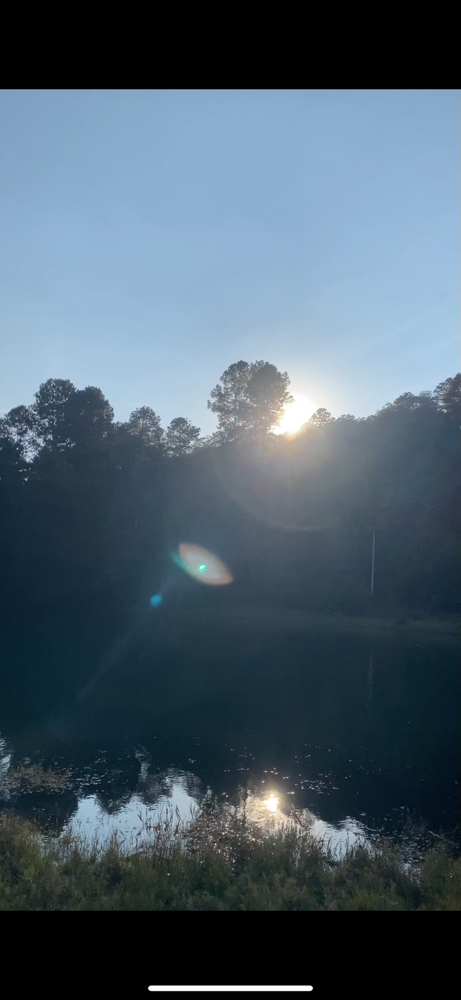
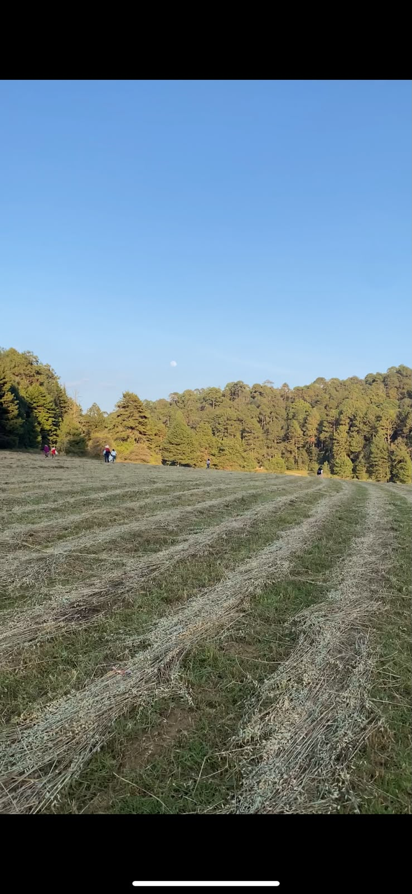

"Visita nuestro pueblo mágico"
"Valle de Bravo"
El Camino a Pinal del Marquesado es una ruta ecoturística en Valle de Bravo, Estado de México, que ofrece a los visitantes la oportunidad de explorar la belleza natural de la región. Esta ruta es popular entre los entusiastas del senderismo y el ciclismo de montaña debido a sus paisajes pintorescos y la diversidad de flora y fauna que se puede observar a lo largo del trayecto.

Para llegar al inicio de la ruta, es recomendable utilizar transporte privado, ya que las opciones de transporte público en la zona son limitadas. Se sugiere consultar con operadores locales de ecoturismo o guías especializados para obtener información actualizada sobre el acceso y las condiciones del camino.
